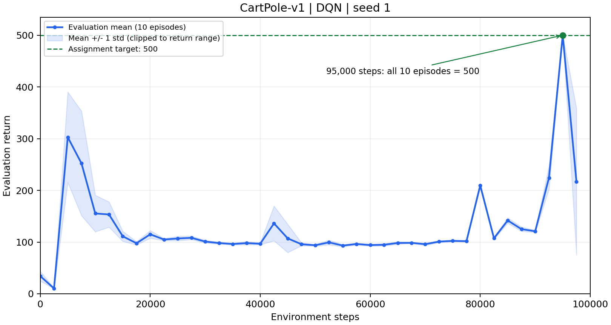
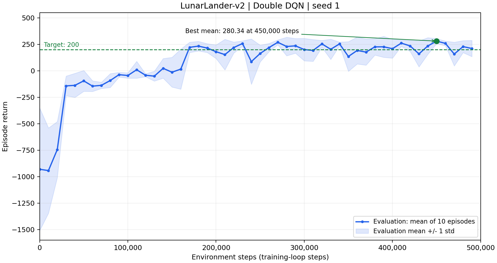
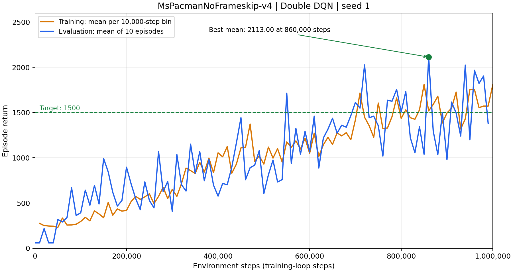
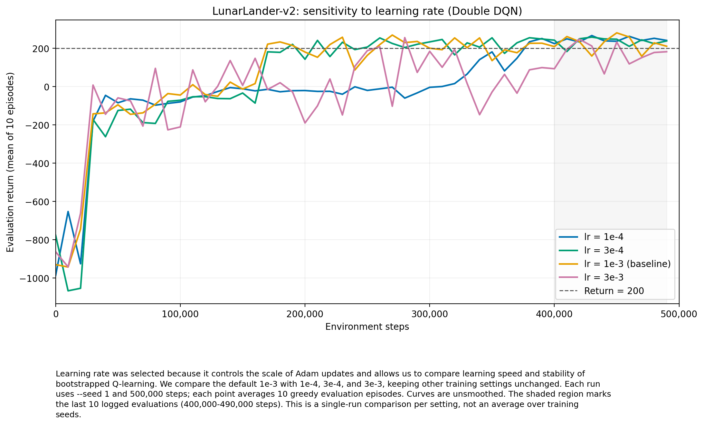
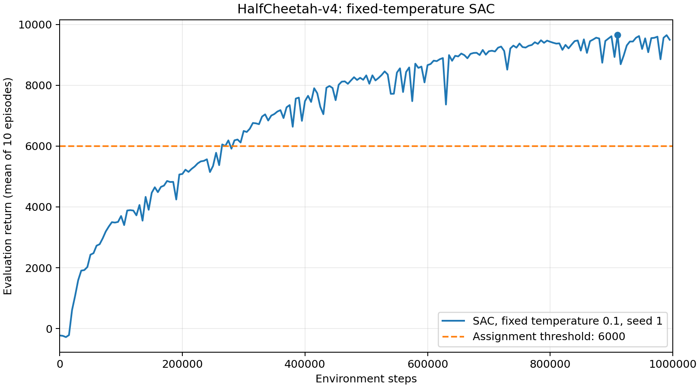
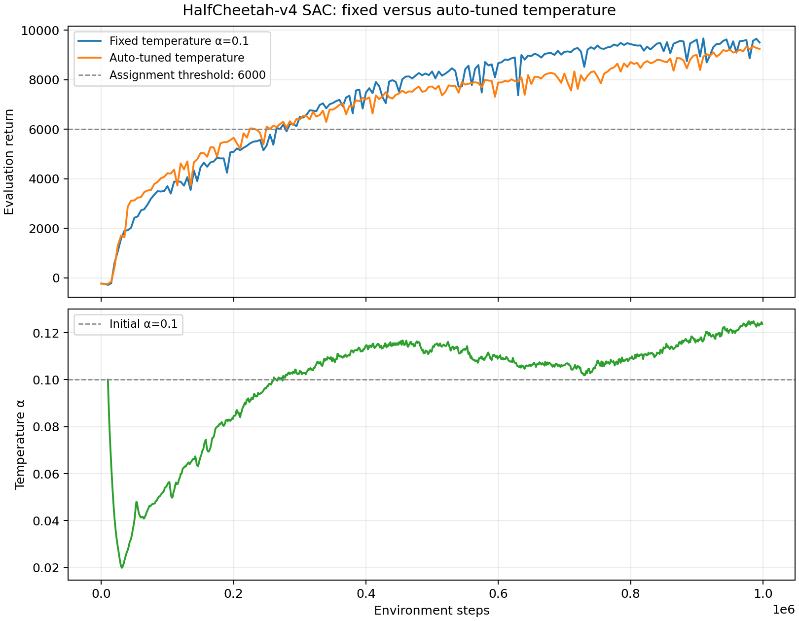
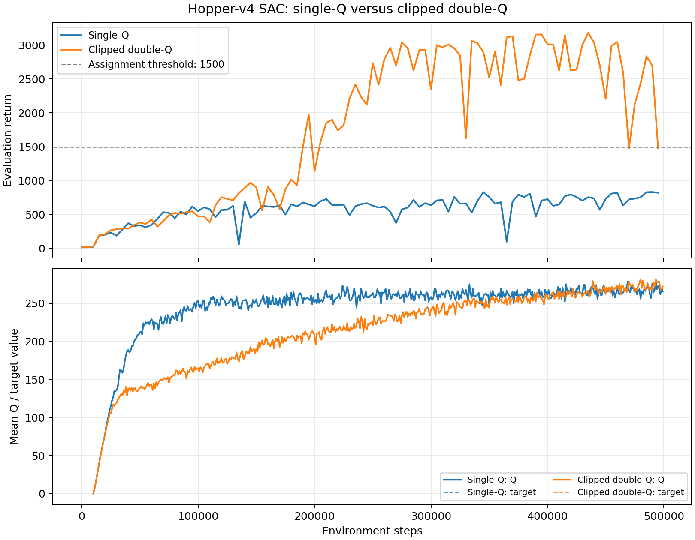

所有正式实验使用训练 seed 1，在本机 GPU 上运行。图中的横轴是环境步数；评估回报是每次评估 10 个回合的平均值。除明确标出的训练回报外，曲线均为未经平滑的评估均值。每个设置只有一次训练，因此比较只描述这些观测结果。
使用 ε-greedy 采样、经验回放和目标网络训练 DQN。评估平均回报在 95,000 步达到 500，满足调试目标。曲线在达到 500 后仍有波动，说明单个高分检查点并不代表此后每次评估都保持满分。

Double DQN 使用在线网络选择下一步动作，使用目标网络评价该动作。LunarLander 的最高评估平均回报为 280.34（450,000 步），首次达到 200 分是在 170,000 步。MsPacman 的最高评估平均回报为 2113（860,000 步），首次达到 1500 分是在 550,000 步；两项均达到作业目标。


MsPacman 训练曲线按每 10,000 个环境步结束的回合分组，再对组内回报求平均。训练时执行带探索的 ε-greedy 策略，尤其早期 ε 较大；评估使用 ε=0 的贪心策略，并在检查点上单独运行 10 个回合。因此早期训练回报通常明显低于评估回报。两条曲线还采用不同的采样和聚合口径，不能当作同一组回合的成对结果比较。
选择学习率，因为它直接影响 Adam 更新幅度，可能改变 Q-learning 的学习速度和稳定性。以默认的 1e-3 为基线，另外比较 1e-4、3e-4 和 3e-3；其余配置相同，均训练 500,000 步，每 10,000 步评估一次。

| 学习率 | 首次 ≥200 的步数 | 最高评估均值 | 最后 10 次均值 | 最后 10 次标准差 |
|---|---|---|---|---|
| 1e-4 | 380,000 | 266.15 | 244.22 | 12.43 |
| 3e-4 | 190,000 | 257.92 | 234.30 | 21.67 |
| 1e-3 | 170,000 | 280.34 | 223.32 | 38.65 |
| 3e-3 | 260,000 | 255.37 | 167.19 | 56.59 |
默认学习率最快达到 200，峰值也最高；1e-4 达标最慢，但后期均值最高且波动最小。3e-4 在速度与后期表现之间折中；3e-3 的后期表现最差。表中的标准差是最后 10 个评估检查点之间的波动，不是跨训练 seed 的误差。
固定温度 α=0.1 的 SAC 在 265,000 步首次超过 6000，最高评估平均回报为 9664.60（910,000 步）。最后 10 次评估的均值为 9412.11，满足作业要求。

自动调温版本在 225,000 步首次超过 6000，最高评估平均回报为 9346.23；固定温度版本的峰值为 9664.60。两者都达到目标，自动调温在本次单 seed 实验中没有超过已经调好的固定温度基线。最后 10 次评估的均值分别为 9219.50 和 9412.11。

自动温度从 0.1 开始，约在 31,000 步降至 0.020，随后逐渐上升，末期约为 0.124。这与训练早期策略熵相对充足、调温器降低探索权重，随后策略趋于集中、调温器提高权重以维持目标熵的解释一致；温度轨迹本身不能单独证明这一原因。
单 Q 的最高评估平均回报为 833.40，未达到 1500。Clipped double-Q 在 190,000 步首次超过 1500，最高为 3180.66（435,000 步）；最后 10 次评估的均值为 2388.97，而单 Q 为 770.29。本次运行中 clipped double-Q 明显更好。

单 Q 的自举目标容易受到价值高估影响；clipped double-Q 取两个目标 Critic 的较小值，减少单个 Critic 的乐观误差进入目标值的机会。图中的 Q 值来自各自策略访问的不同状态和动作，不能仅凭原始 Q 值大小直接量化高估偏差。本实验对“缓解高估有助于训练”的解释提供了支持，但单个训练 seed 不构成严格因果证明。
原始日志、模型参数和运行配置位于 exp/ 中的七组正式实验目录；额外学习率实验用于图 4，详细统计见 report_assets/。报告中的最高分均指训练期间记录的评估均值，最终 checkpoint 未另行作为最高分评估。